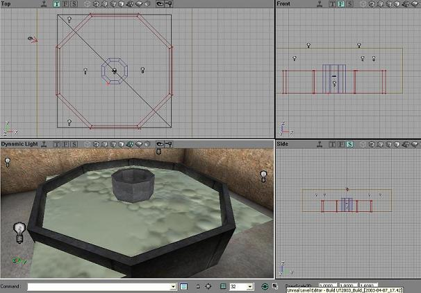
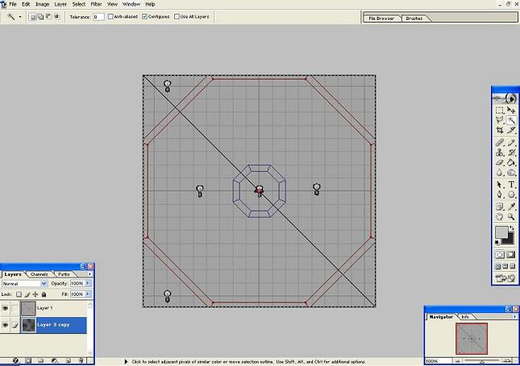
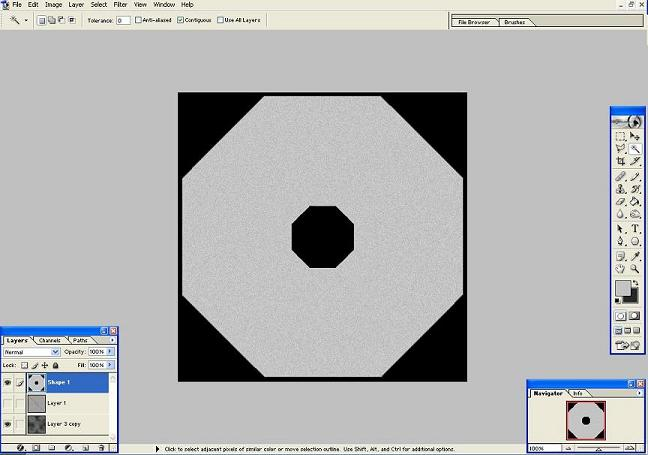
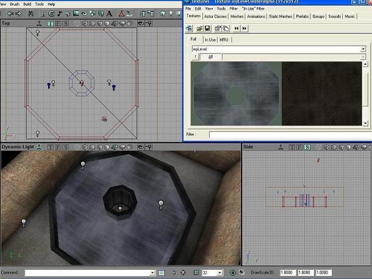

Holes In Fluid Surfaces
Putting "holes" in a FluidSurfaceInfo
mkay, assuming u've already placed everything where it needs to be, this is probably the best method for carving holes in you FSI (fluidsurfaceinfo). And this is of course only 1 of many ways to do this. For the example i'm just using this quick example map

|
UED won't let me up the detail of the FSI atm, and i don't feel like restarting.
In the top viewport, zoom in/out and pan so u get the FSI just about in the middle, but make sure you can see the whole FSI in the viewport. now hit "Print Screen" on the keyboard. now open your 2d program of choice, and open your texture you'll be using for the water (assuming your using a custom texture, if not you can just make the alpha texture, then apply as an opacity mask later). I'll be using photoshop 7. Create a new layer and Ctrl + V (paste), which should paste in your top view that you took w/ the printscreen button. Now carefully select the OUTLINE of the FSI. Then resize it so it's flush w/ the canvas

|
Create a new layer, and paint the parts you want to be invisible PURE black, and the parts you want to be completely visible PURE white, and anything you want semi-visible, paint a shade of gray (darker = more transparent). Now make sure this is all on one layer, press ctrl + A (select all), and then Ctrl + C (copy).

|
I made the 2nd ring partially visible w/ some noise to give it a slight variance in opacity, and the inner ring & outside completely invisible. Now find the Channels tab/menu, and add Alpha Channel, then Ctrl + V (paste) it in there. Go back to the Layers tab/menu and delete all the extra layers except for the base texture,
![[fluidsurfacealpha4]](images/fluidsurfacealpha4.jpeg) |
then save it out as dds (or other supported format w/ alpha channels), and make sure Alpha Channels are on when you save it out. Then go back into UED, open texture browser, File / import, find the texture you saved, setup the packages etc. (use myLevel for package if you don't want to save a custom package), and check "Alpha", and it should look something like this after you apply it:

|
(also, make sure you have tiling set to 1 on the FSI). Forgive me if I forgot or got anything wrong, this is my first tut, and I'm sure someone could & has done a tutorial about this better than me, but hopefully this helped someone at least  feel free to edit/fix nething.
feel free to edit/fix nething.
comments
those screenshots could be a bit smaller – they take a very long time to load.
WheatPuppet: A question: wouldn't that cause a player moving close to the pool to cause the water to ripple, even though he appeared not to be interacting with the water?
Mosquito: not if you clap thingy the fluid surface, its kinda a late and I can't remember to well, but with terrains you can make the fluid surface collide with solid objects.
JudasKing: yes it does unfortunately, I also forgot to mention (even though it's probably assumed) that even though you can't see certain areas of the water that are invisible because of the opacity mask on it, it's still rendered, so i wouldn't recommend doing this if you have huge gaping areas that need to be invisible, because it will still eat up mem. I don't think the clamping terrain would fix the problem of karma ripples, it clamps the vertices, which wouldn't do much good since the vertices are outside the ring.
King Mango Using a third party app to model a custom sheet mesh is the best way for complex shapes of water. Then set this to an xProc mesh